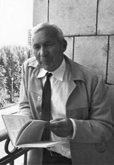

1903-1987
Andrey Kolmogorov

Portrait: Konrad Jacobs, CC BY-SA 2.0 de, Wikimedia Commons.
Events (5)
- 1906Markov chains
developer · Probability
- 1931Kolmogorov's diffusion theory and parabolic PDE
originator · Probability
- 1939Wiener-Kolmogorov filtering
developer · Information & cryptography
- 1954KAM theory: stability of Hamiltonian systems
originator · Dynamics
- 1965Algorithmic information theory (randomness via program length)
developer · Algorithms & complexity